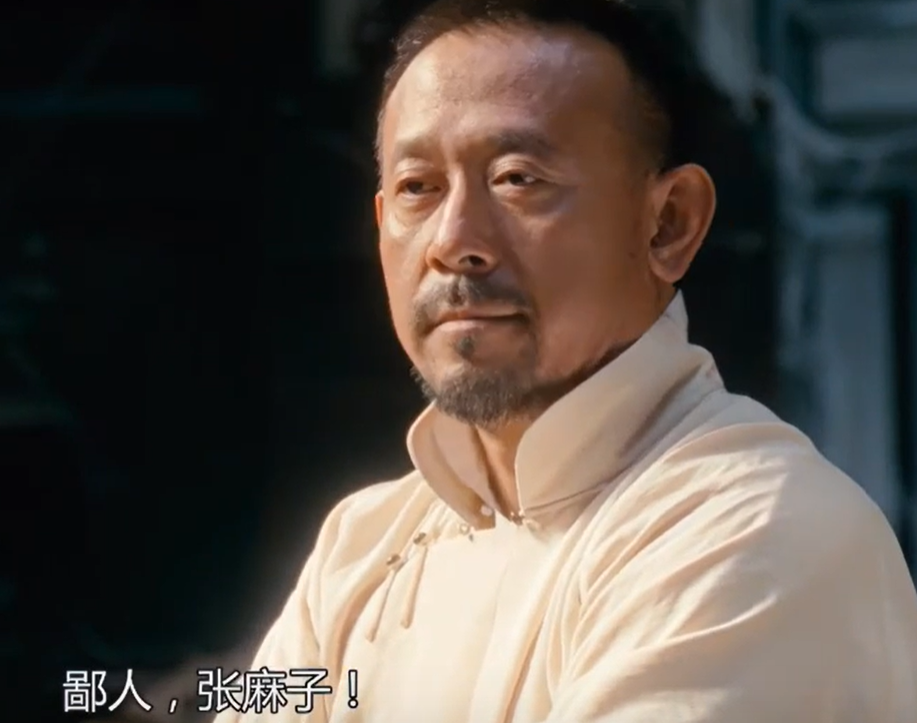
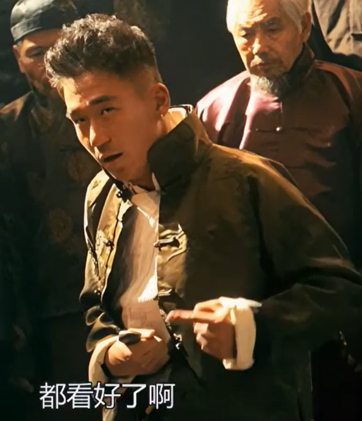

（马邦德逃走） 张麻子：人往高处走，水往低处流！当惯了县长再回去当麻匪，恐怕是有点不习惯。 夫人：曾经沧海难为水嘛。 张麻子：说得好。 （口哨声） 老六：那怎么办啊？ 张麻子：（口哨）“从正面绕回来，让大家乐一乐。”怎么办？继续当官呗！做事要多动脑筋，先动脑子后动手，明白吗？ 老六：明白。 （马邦德被抓） 张麻子：我们现在是做官的人了，不得再有匪气。师爷，当县长最要紧的是什么？ 马邦德：忍耐！ （张麻子笑。）
（县衙） 马邦德：晚了！前几任县长把鹅城的税，收到九十年以后了。也就是他妈的西历二零一零年了！咱们来错地方了。 张麻子：我倒是觉得这个地方不错。 马邦德：百姓成穷鬼了，没油水可榨了。 张麻子：老子从来就没想刮穷鬼的钱。 马邦德：不刮穷鬼的钱你收谁的呀？ 张麻子：谁有钱挣谁的。 马邦德：当过县长吗？ 张麻子：没有。 马邦德：我告诉告诉你！县长上任，得巧立名目，拉拢豪绅，缴税捐款。他们交了，才能让百姓跟着交钱。得钱之后，豪绅的钱如数奉还，百姓的钱，三七分成！ 张麻子：怎么才七成啊？ 马邦德：七成是人家的！能得三成还得看黄四郎的脸色。 张麻子：谁的脸色？ 马邦德：他！（指着帽子） 张麻子：他！？我大老远的来一趟，就是为了看他的脸色？ 马邦德：对！ 张麻子：我好不容易劫了趟火车，当了县长。 马邦德：对。 张麻子：我还得拉拢豪绅。 马邦德：对。 张麻子：还得巧立名目。 马邦德：对。 张麻子：还得看他妈的脸色。 马邦德：对。 张麻子：我不成跪着要饭的了吗？ 马邦德：那你要这么说买官当县长还真就是跪着要饭的，就这，多少人想跪还没这门子呢！ 张麻子：我问问你，我为什么要上山当土匪？
（马邦德摇头。） 张麻子：我就是腿脚不利索，跪不下去！ 马邦德：原来你是想站着赚钱啊！那还是回山里吧。 张麻子：哎，这我就不明白了。我已经当了县长了，怎么还不如个土匪呀？ 马邦德：百姓眼里，你是县长。可是黄四郎眼里，你就是跪着要饭的。挣钱嘛，生意，不寒碜！ 张麻子：寒碜，很他妈寒碜。 马邦德：那你是想站着，还是想挣钱呐？ 张麻子：我是想站着，还把钱挣了。 马邦德：挣不成！ 张麻子：挣不成？ 马邦德：挣不成！ 张麻子：（摆出枪）这个能不能挣钱？ 马邦德：能挣，山里。 张麻子：（摆出官印）这个能不能挣钱？ 马邦德：能挣，跪着。 张麻子：这个加上这个，能不能站着把钱挣了？ 马邦德：敢问九筒大哥何方神圣？ 张麻子：鄙人，张麻子！
 （县衙）
马邦德：冤从何来？
武智冲：没冤！
马邦德：有冤的说冤，没冤的那就散，散会。
孙守义：冤！不是我冤，是武举老爷冤！小的不长眼，在躲鼓的时候碰洒了武举老爷的酒，害的武举老爷没有了胃口，小的应该给武举老爷赔礼，赔礼。
武智冲：老子他妈不冤。
张麻子：敢说你不冤。跪下！
马邦德：这可是黄四郎的团练教头，跪不得。
武智冲：老子是光绪三十一年皇上钦点的武举人，论官职，比你官大，你应该给老子跪下，跪下！
张麻子：（拿枪）跪不跪？
（武智冲跪下。）
（县衙）
马邦德：冤从何来？
武智冲：没冤！
马邦德：有冤的说冤，没冤的那就散，散会。
孙守义：冤！不是我冤，是武举老爷冤！小的不长眼，在躲鼓的时候碰洒了武举老爷的酒，害的武举老爷没有了胃口，小的应该给武举老爷赔礼，赔礼。
武智冲：老子他妈不冤。
张麻子：敢说你不冤。跪下！
马邦德：这可是黄四郎的团练教头，跪不得。
武智冲：老子是光绪三十一年皇上钦点的武举人，论官职，比你官大，你应该给老子跪下，跪下！
张麻子：（拿枪）跪不跪？
（武智冲跪下。）
老六：一就是一，二就是二，我今天就吃了一碗凉粉。 胡万：你给了一碗的钱，吃了两碗粉。你没钱是吧，我帮你给！ 老六：看见了吗？多少碗我都付得起！但是吃一碗的粉，就给一碗的钱。 胡万：这么多钱，他吃了多少碗粉啊。你早说不就得了吗？他要个公平，你不是欺负老实人吗？ 老六：告诉我，你是老实人吗？ 孙守义：我是。 老六：那你就说实话，我到底吃了几碗粉？你告诉他！你说不说？ 胡万：拿枪吓唬一可怜的，卖凉粉的。有枪是吧？谁没枪啊！孙守义，大声说，他吃了几碗。守义，在座所有的乡亲，都会为你和你的家人作主的。大声说，几碗。 孙守义：（犹豫纠结狰狞）两碗。 老六：你是一个恶人！ 胡万：哦？ 老六：比恶是吧，我他妈比你还恶。（匕首捅进肚子）都看好了啊，今儿我肚子里要有两碗粉，我白死。 胡万：你要是肚子里只有一碗粉，我死！ 武智冲：要是有两碗粉，我陪六爷一起死。 胡万：凉粉呢？太浅了，我看不见。 武智冲：六爷！佩服！ 胡万：凉粉在肠子里，你得横着拉一下，才让我看得见。 武智冲：六爷，让大家看看是一碗还是两碗。拉！ （老六用力拉刀） 武智冲：六爷，碗！ 老六：看见了吧！看见了吧！是不是只有一碗！ 武智冲：六爷，挺住！我去给你请大夫！ （众人散） 老六：别走！是不是只有一碗！是不是只有一碗！是不是！该你了。 胡万：我知道你只吃了一碗，你上当了。